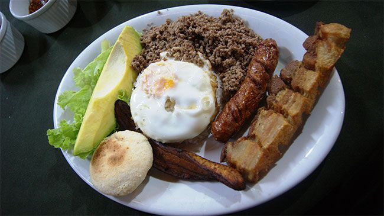

Catalogo

Ajiaco con pollo
Uno de los antojos principales de los colombianos en la zona andina del país
(Bogotá y sus alrededores) es el ajiaco. Esta es una especie de sopa y suele servirse
acompañada de diversos contornos. Es uno de los platos más representativos y está hecha
básicamente de patatas amarillas colombianas, mazorca, pollo y arracacha
Bandeja Paisa
Aunque para algunos pueda parecer una exageración, en una bandeja paisa se pueden encontrar hasta
10 partes en un mismo plato, ya que es una comida bastante diversa y pesada. Es originaria de la
región de Antioquia y es conocida por muchos como el plato más representativo de la comida típica
de Colombia a nivel mundial, ya que nunca puede faltar en cualquier restaurante.
De forma general, en una bandeja paisa pueden convivir armoniosamente: chicharrón frito, frijoles
rojos, arroz blanco, tajadas fritas de plátano, huevos fritos, cebolla, tomate, una arepa, aguacate,
morcillas, patacones, carne molida y costillas. Debido a la gran cantidad de elementos no se sirve en
un chorizo, plato convencional, sino en unos enormes, o en bandejas de madera especiales para el plato,
de ahí deriva su nombre.

Patarasca
La patarasca es un plato a base de hojas de plátano y pescado, y es uno de los favoritos de muchos
restaurantes de comida típica de Colombia en el mundo, debido a sus raíces indígenas. Algo fascinante de
su region es que los preparan con los alimentos mas frescos que obtienen de sus selvas y rios
Es típico de la región de la Amazonía y se prepara sazonando un pescado con un guiso de especias y
vegetales del amazonas (pimientos, ají, cúrcuma, entre otros). Se envuelve en una hoja de plátano y se
puede asar, sancochar e incluso poner en el horno. Sin embargo, lo más común es cocinarlo bajo las
brasas del fogon.

Sancocho
Es uno de los más comunes en la región costera del país, reconocida internacionalmente por su rica
cultura y gastronomía. Es una especie de sopa preparada con distintos tipos de carnes, verduras de
todo tipo, condimentos y algunas especias (Mazorca, plátano, ahuyama, por ejemplo).
Mondongo
El mondongo es una especie de sopa pero mucho más compleja y que en ocasiones se sirve sola, ya que puede ser un plato bastante pesado para muchos. Se prepara a base de tripa animal y se acompaña con papas colombianas y gran cantidad de verduras.

Platano maduro relleno
El dulce tampoco puede faltar en la gastronomía colombiana. Los plátanos de maduro rellenos son comunes en los almuerzos de las familias del centro y norte de país, y son básicamente un complemento a varios tipos de comida. Son maduros al horno rellenos con queso crema, arequipe, bocadillos y mantequilla.

Postre de Coco
Es un postre típico de la ciudad turística de Cartagena, está hecho a base de harina de trigo, azúcar y cocos. Es bastante cremoso y uno de los platos dulces favoritos de la gastronomía del país.
Oferta para niños
Los niños son muy importantes para nosotros y que prueben los platos tipicos de Colombia y que conozcan mas hacerca de ellos es muy importante asi que realizamos un descuento del 20% para niños menores de 15 año

Oferta para mayores de edad
Las personas mayores de edad tambien son muy importantes para nosotros, asi que por todo su trabajo y dedicacion que le dieron a su familia y a su trabajo como señal de respeto y gratidud decidimos hacer el descuento de 10% de descuento a personas mayores de 60 años
Oferta de familia
Es importante para nosotros que ustedes disfurten un buen plato tipico de Colombia en familia o con amigos asi que se vienes a nuestro con tus familiares o amigos y compras 4 platos cualquiera te regalaremos 2 postres